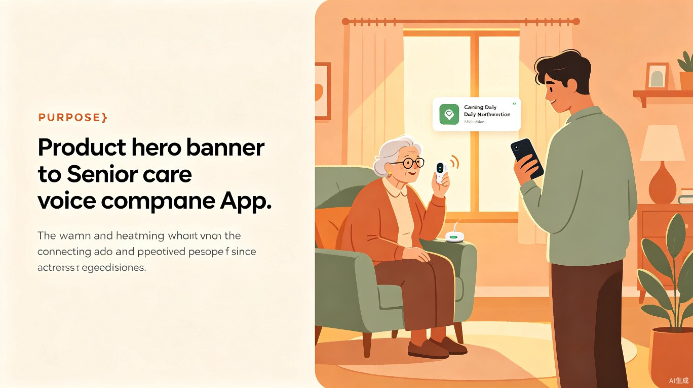

「暖声守护」是一款面向空巢老人的智能语音陪伴与远程关怀系统。第一版以手机 App 为核心载体，老人随身携带手机，系统通过语音识别自动记录老人每日的讲话与自言自语内容，并转换为文字存档；同时，系统会每天定时主动与老人语音聊天，了解其身心状态。每日结束后，系统会自动生成一份老人状态总结报告，推送给远方的子女，让他们每天都能知晓父母的近况。
空巢老人长期独居，缺乏日常倾诉对象与情感陪伴，子女因工作或异地无法实时了解父母真实的生活与心理状态，导致老人孤独感加剧、潜在健康风险难以及时发现。
灵感来源于身边多位朋友提到父母独居时的担忧：电话打少了怕出事，打多了又怕打扰。我们希望用技术搭建一座"无声的桥梁"，让关心不被距离阻隔。
第一版为手机 App（老人端 + 子女端），未来第二版将配合家用摄像头，实现音视频融合分析，构建更全面的老人日常状态感知体系。
语音自动录制与转文字、AI 定时语音聊天互动、每日状态智能总结、子女端日报推送、情绪与异常预警提醒。
核心用户群体分为两类：一类是 60 岁以上独居或空巢老人，他们日常生活缺少陪伴，有倾诉需求但不愿频繁打扰子女；另一类是 老人的子女（30–50 岁），他们大多在外地工作或忙于自己的家庭，无法每天陪伴在父母身边，却时刻牵挂父母的健康与安全。
老人在日常生活中随身携带手机，无论是做饭、散步、看电视还是自言自语时，App 都会在后台自动录制并识别语音内容。每天固定时段（如晚饭后），系统会主动发起语音对话，像一位耐心的老友一样与老人聊天。子女则在每天清晨收到一份简洁的日报，了解老人前一天的情绪、活动与异常信号。
缓解空巢老人孤独感，构建"科技+亲情"的新型养老关怀模式，助力老龄化社会的和谐稳定。
切入银发经济蓝海市场，可通过子女订阅制、增值服务（健康咨询、紧急救援）实现可持续盈利。
自动化语音采集与 AI 总结，将子女从"反复打电话确认"的低效关怀中解放出来，实现精准关心。
从社会价值角度看，「暖声守护」不仅仅是一款产品，更是一种对老龄化社会的人文回应。中国 60 岁以上人口已超 2.8 亿，其中空巢老人占比超过一半。我们用技术弥补空间的距离，用声音传递跨越千里的温度，让每一位老人都能在熟悉的家中，感受到被倾听、被关心、被守护的安全感。对于子女而言，每天一封简洁的日报，是安心，更是爱的延续。
为了让产品持续创造价值，我们规划了清晰的迭代路径，从语音陪伴逐步扩展到多维度感知，构建完整的老人关怀生态。
以手机 App 为载体，实现语音自动录制、AI 定时聊天、每日状态总结与子女日报推送，解决核心陪伴与信息传递问题。
配合家用摄像头，增加视频行为分析（如摔倒检测、活动轨迹），结合语音与视觉数据，生成更精准、全面的老人健康与情绪报告。